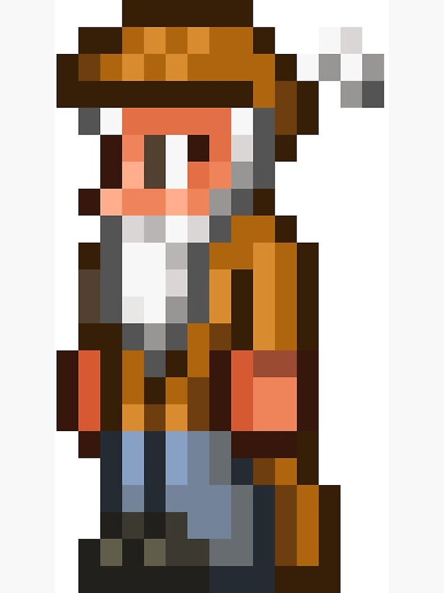

1
Durante Halloween
(solo un objeto de hierro siempre disponible)
(solo un objeto de hierro siempre disponible)
(solo un objeto de hierro siempre disponible)
(solo un objeto de hierro siempre disponible)
(solo un objeto de hierro siempre disponible)
El mercader es un NPC del modo normal que aparece cuando el jugador tiene al menos 50 . En Multijugador es necesario que cada jugador tenga al menos 50 en su inventario. Al igual que el resto de NPCs, también necesita una casa.
El mercader |
|
 |
|
Estadisticas |
|
Tipo |
NPC |
Salud |
250 |
Arma |
Cuchillo arrojadizo |
Defensa |
15 |
Especialidad |
Vender objetos |
Bestiario |
|
Descripcion |
El Mercader actúa como una especie de tienda general, proporcionando útiles herramientas para iniciar y suministros necesarios para la exploración. |
Bioma preferido |
El bosque |
IDs internas |
|
IDs bestiario |
17 |
ID NPC |
2 |
Cuando hables con el Mercader te dirá alguna de éstas frases, dependiendo de la hora del mundo.
-Mañana:
-Tarde:
-Anochecer:
-Noche:
-Medianoche:
-Fin de la noche:
-Luna de Sangre:
-Cuando no has derrotado el Ojo de Cthulhu:
-Cuando hay Fiesta:
| Objeto | Precio | Disponibilidad |
|---|---|---|
| Casco de minero | 4 |
Siempre disponible |
| Hucha | 1 |
Siempre disponible |
| Yunque de hierro | 50 |
Siempre disponible |
| Red para insectos | 25 1 |
Siempre disponible |
| Pico de cobre | 5 |
Siempre disponible |
| Hacha de cobre | 4 |
Siempre disponible |
| Antorcha | 50 |
Siempre disponible |
| Poción curativa menor | 3 |
Siempre disponible |
| Poción menor de maná | 1 |
Siempre disponible |
| Flecha de madera | 5 |
Siempre disponible |
| Estrellas ninja | 15 |
Siempre disponible |
| Cuerda | 10 |
Siempre disponible |
| Varita luminosa | 10 |
Durante la noche |
| Cuchillo arrojadizo | 50 |
Durante Luna de Sangre |
| Nube dulce | 1 |
Estar en una Tundra |
| Caja fuerte | 20 |
Derrotar a Esqueletrón |
| Bola de discoteca | 1 |
Derrotar al Muro carnoso |
| Polvo dorado | 17 |
Derrotar al Muro carnoso |
| Poción curativa mayor | 50 |
Derrotar a un jefe del Modo difícil |
| Poción de maná mayor | 5 |
Derrotar a un jefe del Modo difícil |
| Bengala | 7 |
Tener una pistola de bengalas (inventario) |
| Bengala azul | 7 |
Tener una pistola de bengalas (inventario) |
| Hoz | 60 |
Siempre disponible Durante Halloween |
| Clavo
|
1 |
Tener una pistola de clavos (inventario) |
| Sombrero de recaudador de impuestos
|
3 |
Durante Halloween |
| Traje de recaudador de impuestos
|
3 |
Durante Halloween |
| Pantalones de recaudador de impuestos
|
3 |
Durante Halloween |
| Espada corta de hierro
|
10 |
Aleatoriamente (solo un objeto de hierro siempre disponible) |
| Espada larga de hierro
|
10 |
Aleatoriamente (solo un objeto de hierro siempre disponible) |
| Pico de hierro
|
10 |
Aleatoriamente (solo un objeto de hierro siempre disponible) |
| Martillo de hierro
|
10 |
Aleatoriamente (solo un objeto de hierro siempre disponible) |
| Arco de hierro
|
10 |
Aleatoriamente (solo un objeto de hierro siempre disponible) |
| Pluma de pavo
|
10 |
Durante Acción de gracias |
| Anillo de San Valentín
|
1 |
Durante San Valentín |
| Flecha corazón
|
50 |
Durante San Valentín |
| Wiesnbräu
|
9 |
Durante Oktoberfest |